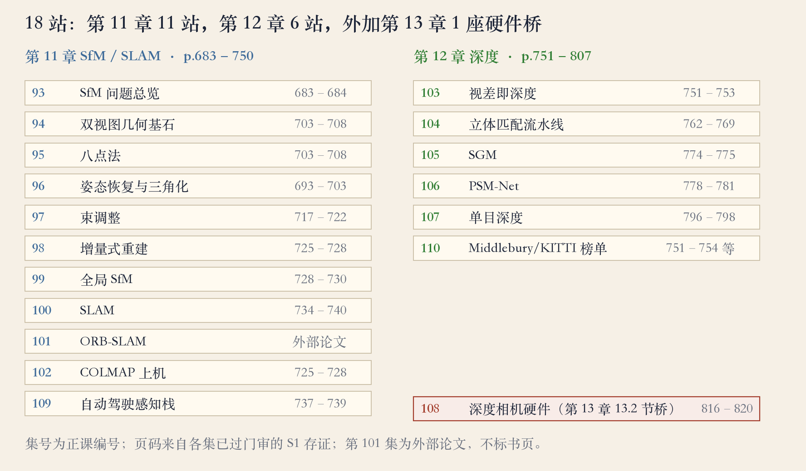
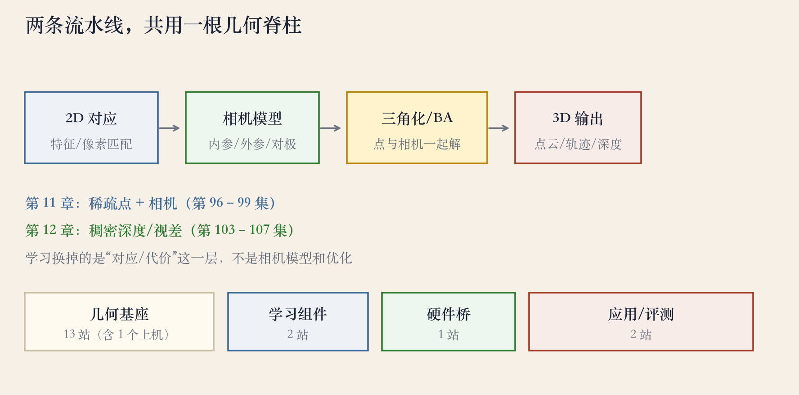
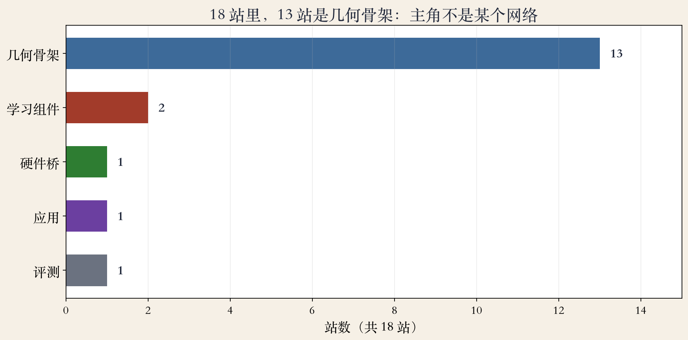

第 11–12 章复盘 · 18 站
复盘：18 站，谁在承担主线
- 第 93 集到第 110 集，共 18 站。
- 第 11 章 11 站，第 12 章 6 站。
- 另有第 13 章硬件桥 1 站。
- 几何 13 站，学习 2 站，其余 3 站。
依据：本集复盘台账
18 站账目
第 11 章：11 站
第 12 章：6 站
第 13 章桥：1 站
复盘台账 · 章分布
时间线：两章加一座桥
- 第 11 章：原书 683 到 750 页。
- 第 12 章：原书 751 到 807 页。
- 18 站排在同一条处理链上。
- 第 93 集总览，第 110 集评测。
依据：原书第 683/751 页；本集复盘台账

18 站时间线：第 11 章 11、第 12 章 6、第 13 章桥 1｜程序生成，未用教材或论文原图
原书第 683–684 页 · SfM 开场
第 11 章：先校准相机
- 第 11 章标题：Structure from motion and SLAM。
- 原书 684 页：三维重建是中心问题之一。
- 标定给内参、外参和相机模型。
- 标定不准，姿态和三角化都会偏。
依据：原书第 683–684 页
第 11 章入口
相机标定
姿态恢复
三角化与 BA
SLAM
两视图 · 第 94–96 集
两视图：先定相机，再落点
- 第 94、95 集：对极几何与八点法。
- 第 96 集：姿态恢复与三角化。
- 对极几何把搜索压到一条极线。
- 八点法用 8 个对应点解基础矩阵。
依据：本集复盘台账
两视图三站
第 94 集：对极几何
第 95 集：八点法
第 96 集：姿态与三角化
多视图 · 第 97–99 集
多视图：BA、增量与全局
- 第 97 集：束调整，相机和点一起解。
- 第 98 集：增量式，边加图边解。
- 第 99 集：全局式，先对齐旋转。
- 三条路线都在压低重投影误差。
依据：本集复盘台账
三条路线
束调整：联合优化
增量式：顺序与漂移
全局式：旋转平均与尺度
SLAM 与应用 · 第 100–102 集
SLAM 与应用：离线慢，在线快
- 第 100 集：SLAM，边走边定位建图。
- 第 101 集：ORB-SLAM 用三个线程。
- 第 102 集：COLMAP 用 12 张图跑通。
- 第 109 集：深度用于自动驾驶感知。
依据：本集复盘台账
离线与在线
离线：图齐了慢慢算
在线：边走边算，控延迟
第 109 集：深度是共用表示
原书第 751 页 · 稀疏到稠密
第 12 章：换对应，不换相机模型
- 原书 751 页：第 11 章给相机和稀疏点。
- 第 12 章要更完整的 3D，如稠密深度图。
- 两条链共用对应、相机模型、三角化与 BA。
- 换的是给每个像素找对应的办法。
依据：原书第 751 页

共用几何脊柱：对应→相机模型→三角化/BA→3D｜程序生成，未用教材或论文原图
原书第 753 页 · 三条路线
立体匹配：三条技术路线
- 原书 753 页：先选像素匹配代价。
- 三条路线：局部聚合、全局优化、深度网络。
- 局部看小窗口，边界容易糊。
- 全局更平滑但更慢，学习要训练数据。
依据：原书第 753 页
深度与硬件 · 第 103–108 集
学习与硬件：两站加一座桥
- 第 103 集：视差即深度。
- 第 104–107 集：立体流水线、SGM、PSM-Net、单目深度。
- 学习站仍输出视差或深度，仍受几何检查。
- 第 108 集属第 13 章 13.2 节，是硬件桥。
依据：原书第 816–820 页；本集复盘台账
评测 · 第 110 集
评测：先读协议，再看名次
- 原书 753 页：Middlebury、KITTI 最早维护榜单。
- 原书 781 页：有训练集的榜单易被监督学习攻占。
- 同一页：跨域泛化仍然不好。
- 原书 797 页：closed-world 数据可能让网络学捷径。
依据：原书第 753/781/797 页
读榜顺序
训练/测试划分
真值覆盖与指标
掩码与跨域
最后看名次
复盘台账 · 谁在承担主线
角色：13 站做几何
- 几何方法 13 站，学习组件 2 站。
- 硬件桥、应用、评测各 1 站。
- 13 站都在把 2D 对应变成 3D。
- 学习改进对应和代价，几何步骤仍在。
依据：本集复盘台账

18 站分层：几何骨架 13、学习 2、硬件桥 1、应用 1、评测 1｜程序生成，未用教材或论文原图
复盘 · 移交下一集
总结：两条链，同一套几何
- 第 11 章：相机、点、轨迹。
- 第 12 章：每个像素的深度。
- 一条稀疏，一条稠密，共用几何步骤。
- 下一集：隐函数、泊松、Marching Cubes。
依据：原书第 683–807 页；移交下一集
两章对照
第 11 章：稀疏点与相机
第 12 章：稠密深度/视差
共同：对应、相机模型、优化